Princeton University
2026-02-23
From logistic to ordinal
Motivating simulation: Loaded dice
Application: Graduate school
Binary outcomes: 0 or 1
We modeled P(Y = 1) using the logit link
\[\text{logit}(p) = \log\frac{p}{1-p} = \beta_0 + \beta_1 X\]
Note
Today we extend this idea. What happens when your outcome has more than two ordered categories?
In psychology many variables have a natural ordering
Most common are Likert scale (“Lick-ert”) items
Liddell and Kruschke (2018) surveyed 68 Psychology articles and found that every article used metric models on ordinal data.
Three main problems:
Response categories may not be (psychologically) equidistant
Responses can be non-normally distributed
Differences in variances of the underlying variable are treated inappropriately
Warning
Using metric models on ordinal data can lead to false alarms, failures to detect true effects, distorted effect sizes, and even inversions of effects.
Easier to understand ordinal regression if we simulate it from scratch and watch the steps unfold.
Just like our weighted coins helped us understand logistic regression.
6 dice. 30 rolls each.
Each die has a lead weight. More lead → the die tends to produce higher scores on a continuous latent “quality” scale.
We then bin these latent scores into three ordered categories: Low, Medium, High.
set.seed(504)
# --- DATA GENERATING PROCESS ---
# Lead weight determines each die's latent mean
dice <- tibble(
die = 1:6,
lead_weight = 1:6,
latent_mean = c(-1.5, -0.5, 0, 0.5, 1.0, 2.0)
)
# TRUE thresholds (students will try to recover these)
tau1 <- -0.5 # boundary between Low and Medium
tau2 <- 1.0 # boundary between Medium and High
# Roll each die 30 times → continuous latent score → categorize
rolls <- dice %>%
rowwise() %>%
mutate(latent = list(rnorm(30, mean = latent_mean, sd = 1))) %>%
unnest(latent) %>%
ungroup() %>%
group_by(die) %>%
mutate(roll = row_number()) %>%
ungroup() %>%
mutate(
category = case_when(
latent <= tau1 ~ "Low",
latent <= tau2 ~ "Medium",
TRUE ~ "High"
),
category = ordered(category, levels = c("Low", "Medium", "High"))
)Each point is a roll. The dashed lines are the true thresholds. Color = the category it falls into.
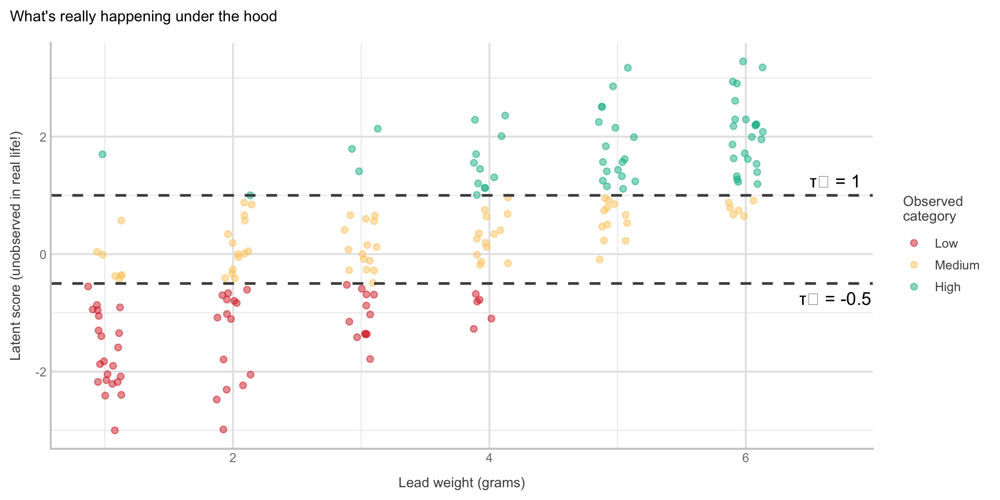
Important
In real life, you never see this plot. You only see the colors — the categories. The y-axis is hidden from you. Ordinal regression’s job is to recover the thresholds and the effect of lead weight using only the categories.
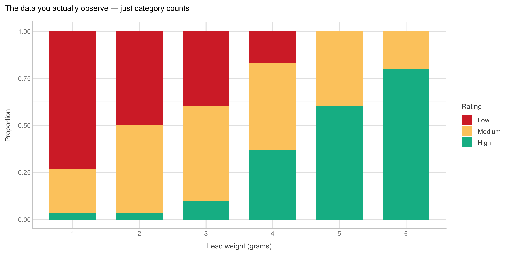
More weight → more “High” and fewer “Low.” The pattern is clear. How do we model it?
Before we model anything, let’s do the arithmetic ourselves. Pick the 3-gram die (30 rolls):
| category | n | prop | cum_prop | cum_odds | log_cum_odds |
|---|---|---|---|---|---|
| Low | 12 | 0.4 | 0.4 | 0.667 | -0.405 |
| Medium | 15 | 0.5 | 0.9 | 9.000 | 2.197 |
| High | 3 | 0.1 | 1.0 | Inf | Inf |
🔗 Connection to the model
Those log-cumulative-odds you just computed? They’re exactly what the model’s thresholds estimate when there’s no predictor. You just did ordinal regression by hand.
Code the categories as numbers (Low = 1, Medium = 2, High = 3) and fit a linear regression.
rolls_numeric <- rolls %>%
mutate(y_numeric = as.numeric(category))
ols_bad <- lm(y_numeric ~ lead_weight, data = rolls_numeric)
ggplot(rolls_numeric, aes(x = lead_weight, y = y_numeric)) +
geom_jitter(aes(color = category), width = 0.15, height = 0.1, alpha = 0.4, size = 2) +
geom_smooth(method = "lm", se = TRUE, color = "red", linewidth = 1.2, fullrange = TRUE) +
scale_color_manual(values = c("Low" = color_low, "Medium" = color_med, "High" = color_high),
guide = "none") +
scale_x_continuous(limits = c(-1, 9)) +
scale_y_continuous(breaks = 1:3, labels = c("Low", "Medium", "High")) +
geom_hline(yintercept = c(0.5, 3.5), linetype = "dashed", color = "grey50") +
annotate("text", x = 8, y = 3.4, label = "Impossible!", color = "red", size = 5) +
annotate("text", x = -0.5, y = 0.6, label = "Impossible!", color = "red", size = 5) +
labs(x = "Lead weight (grams)", y = "Response",
title = "OLS on ordinal data: looks fine, isn't") +
theme_lucid(base_size = 16)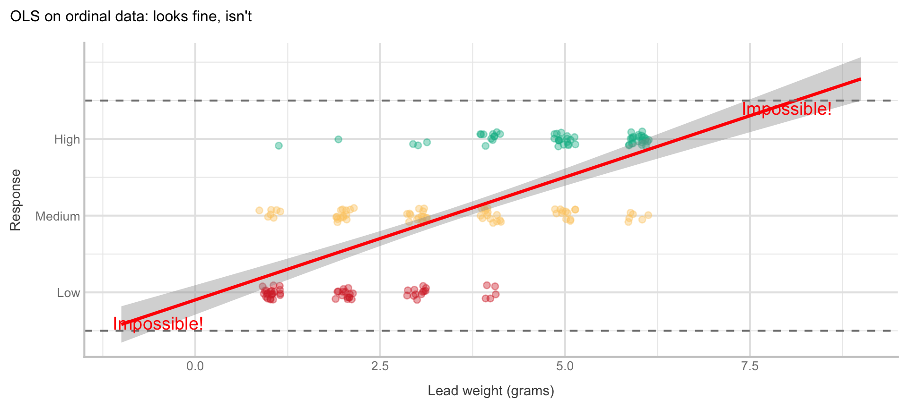
Same latent scores, two different threshold placements. OLS treats both identically.
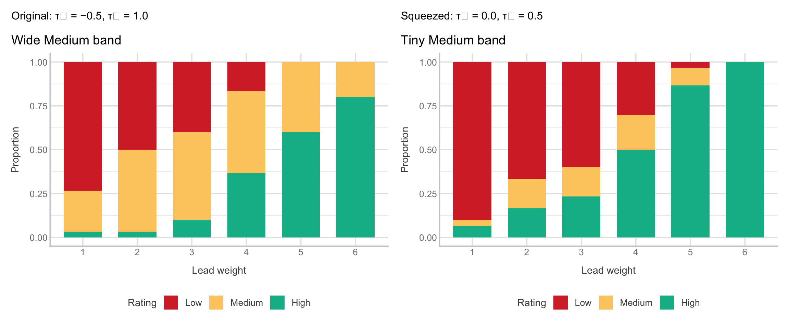
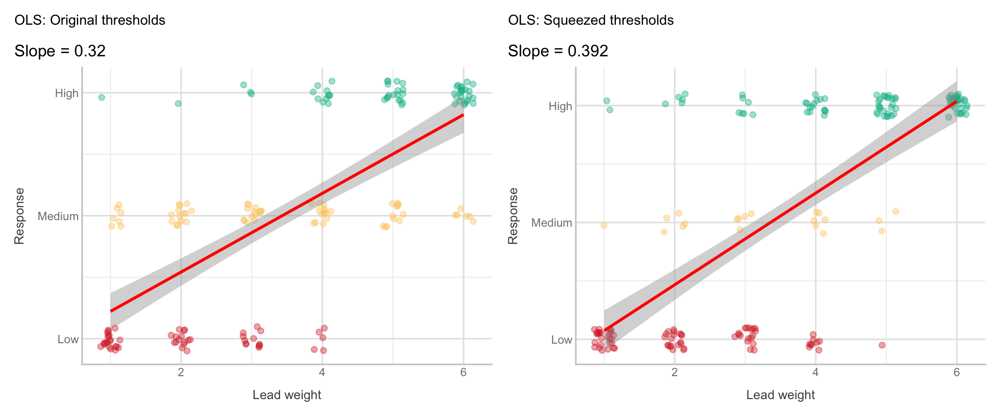
# Ordinal model on original thresholds
fit_orig <- clm(category ~ lead_weight, data = rolls, link = "logit")
# Ordinal model on squeezed thresholds
fit_alt <- clm(category_alt ~ lead_weight, data = rolls_alt, link = "logit")
bind_rows(
tibble(thresholds = "Original (−0.5, 1.0)", term = names(coef(fit_orig)), estimate = coef(fit_orig)),
tibble(thresholds = "Squeezed (0.0, 0.5)", term = names(coef(fit_alt)), estimate = coef(fit_alt))
) %>%
kable(digits = 3)| thresholds | term | estimate |
|---|---|---|
| Original (−0.5, 1.0) | Low|Medium | 2.266 |
| Original (−0.5, 1.0) | Medium|High | 4.941 |
| Original (−0.5, 1.0) | lead_weight | 1.052 |
| Squeezed (0.0, 0.5) | Low|Medium | 3.625 |
| Squeezed (0.0, 0.5) | Medium|High | 4.470 |
| Squeezed (0.0, 0.5) | lead_weight | 1.216 |
The point
The distributions look completely different. OLS gives nearly the same answer for both. The ordinal model recovers the different thresholds — it knows the measurement scales differ.
Three things went wrong
Assumes equal spacing — is the jump from Low → Medium the same as Medium → High? We don’t know, but OLS assumes it is.
Predicts impossible values — the line escapes the range of the data.
Wrong distributional assumptions — residuals are not normal, variance is not constant.
We need a model that respects the ordered nature of the outcome without assuming it’s metric.
With binary logistic regression, we modeled one split:
\[\text{logit}(P(Y = 1)) = \beta_0 + \beta_1 X\]
With ordinal regression, we model multiple cumulative splits:
Each split is its own logistic regression — but they all share the same slope.
🔗 The connection
With 2 categories, ordinal regression is logistic regression. There’s 1 threshold, 1 slope.
With K categories, you get K − 1 thresholds but still just 1 slope per predictor. Think of it as running K − 1 logistic regressions simultaneously, forced to have the same slope.
There is a continuous latent variable \(\tilde{Y}\) (the “true score”) that gets categorized into bins by thresholds: \(\tau_1, \tau_2, \dots, \tau_{K-1}\)
In our dice simulation:
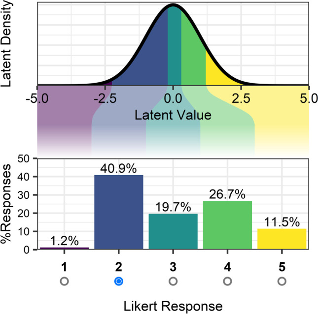
We use the cumulative distribution to model ordered categories
Cumulative probability: \(P(Y \leq k)\)
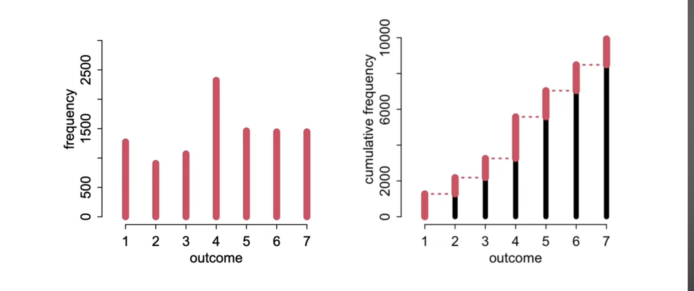
You saw this in the logistic regression lecture. Same skeleton — three components:
\[\begin{align*} Y_i & \sim \mathrm{Dist}(\mu_i, \tau) & \quad & \text{← Random component} \\ g(\mu_i) & = \eta_i & \quad & \text{← Link function} \\ \eta_i & = \beta_0 + \beta_1 X_{1i} + \beta_2 X_{2i} + \ldots & \quad & \text{← Linear predictor} \end{align*}\]
Last time we filled in: Bernoulli distribution, logit link, linear predictor with one intercept and slopes.
What changes for ordinal data?
\[\begin{align*} Y_i & \sim \color{#d63031}{\mathrm{Cumulative}}(\pi_1, \ldots, \pi_K) & \quad & \color{#d63031}{\text{← Ordinal outcome (K ordered categories)}} \\[8pt] \color{#2d3436}{g(\mu_i)} & = \color{#0984e3}{\mathrm{logit}} & \quad & \color{#0984e3}{\text{← Same link as logistic regression}} \\[8pt] \eta_i & = \color{#00b894}{\alpha_k - (\beta_1 X_{1i} + \beta_2 X_{2i} + \ldots)} & \quad & \color{#00b894}{\text{← Thresholds + slopes}} \end{align*}\]
Distribution
Models cumulative probability \(P(Y \leq k)\) — preserves the ordering
Link
Logit — identical to logistic regression. Nothing new here.
Linear predictor
\(K-1\) thresholds \(\alpha_k\) (one per split) + shared slopes \(\beta\) (proportional odds)
| Symbol | Meaning |
|---|---|
| \(P_k\) | Probability of being in category k |
| \(C_{pk}\) | Cumulative probability of being in category k or lower |
| 1 − \(C_{pk}\) | Probability of being above category k |
\[\textrm{Cumulative Odds} = \frac{P(Y \leq k)}{P(Y > k)} = \frac{C_{pk}}{1-C_{pk}}\]
Take the log to get the cumulative logit:
\[\log\left(\frac{C_{pk}}{1-C_{pk}}\right)\]
🏷️ Jargon Alert
Cumulative logit = cumulative log-odds = the same logit link you already know, just applied to cumulative probabilities.
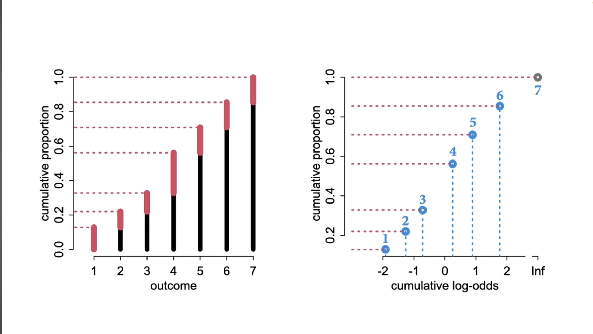
Richard McElreath
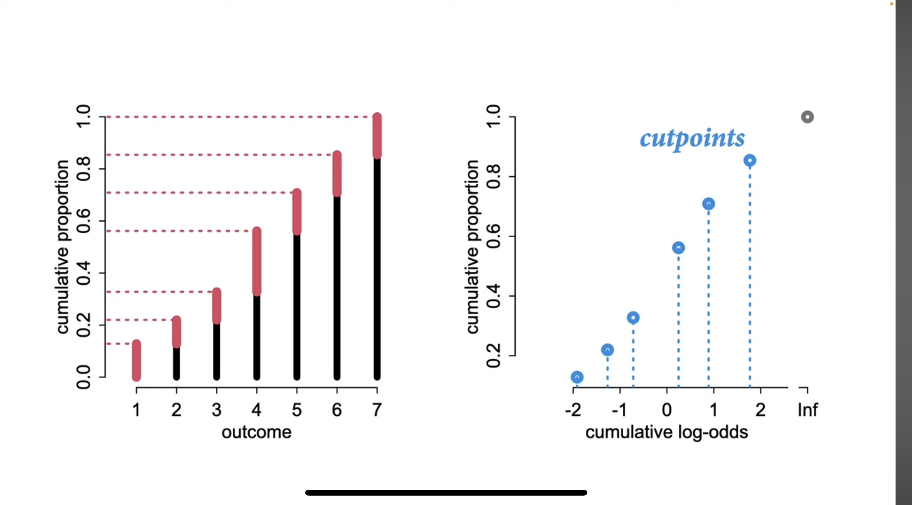
Richard McElreath
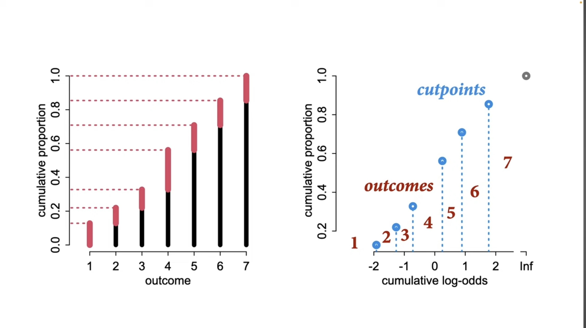
Richard McElreath
\[\log \left(\frac{P(Y \leq k)}{P(Y > k)}\right) = \alpha_k - \beta X\]
\[\begin{array}{rcl} L_1 &=& \alpha_1 - \beta_1 x_1 - \cdots - \beta_p X_p\\ L_2 &=& \alpha_2 - \beta_1 x_1 - \cdots - \beta_p X_p \\ L_{J-1} &=& \alpha_{J-1} - \beta_1 x_1 - \cdots - \beta_p X_p \end{array}\]
We estimate J − 1 equations simultaneously
Each equation has a different intercept \(\alpha_k\) (the thresholds/cut points)
But a common slope \(\beta\) ← this is the proportional odds assumption
Intercepts are always ordered: \(\alpha_1 < \alpha_2 < \dots\)
\(\alpha_k\) (thresholds/intercepts/cut-offs):
\(\beta\) (slopes):
The \(-\) sign:
Thresholds are where the latent variable gets cut into categories.
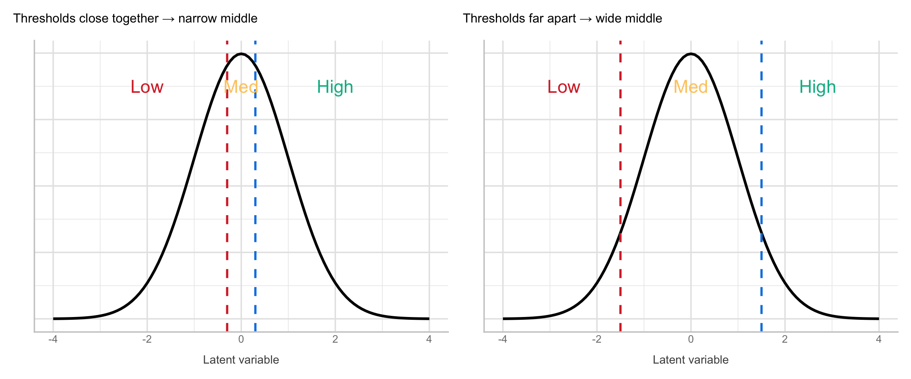
Close thresholds → few people land in the middle category. Far-apart thresholds → the middle category captures a wide range.
The slope \(\beta\) shifts the entire latent distribution along the x-axis — the thresholds stay put.
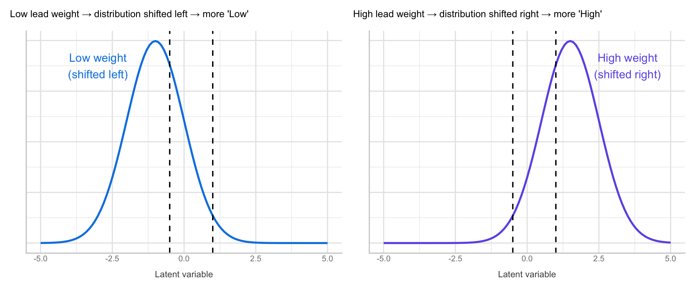
A positive \(\beta\) shifts the distribution right, increasing P(higher categories). The thresholds \(\alpha_k\) don’t move — they’re properties of the response scale, not the predictor.
With subtraction convention (\(\alpha_k - \beta X\)):
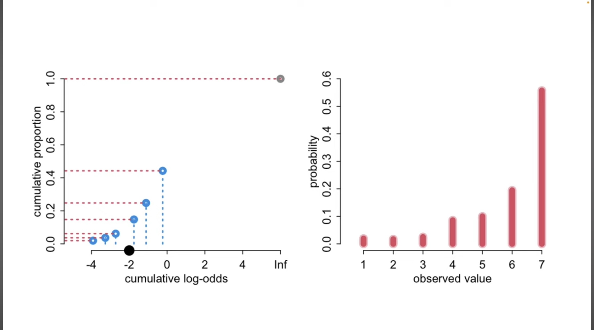
With addition convention (\(\alpha_k + \beta X\)):
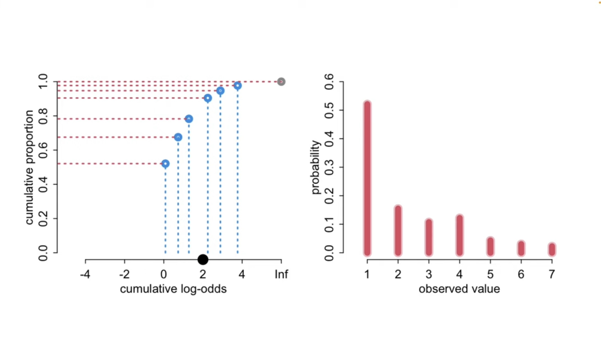
Tip
ordinal::clm() uses subtraction by default (positive = higher). MASS::polr() also uses subtraction. Just check the documentation for whatever package you use.
Before adding predictors, fit a model with no predictor at all — just the thresholds.
| term | estimate | std.error | statistic | p.value | coef.type |
|---|---|---|---|---|---|
| Low|Medium | -0.847 | 0.163 | -5.209 | 0 | intercept |
| Medium|High | 0.744 | 0.159 | 4.662 | 0 | intercept |
🔗 Recognize these?
These threshold estimates are the log-cumulative-odds pooled across all six dice — the same quantity you just computed by hand, but now averaged over the whole dataset. When we add lead_weight as a predictor next, watch how the thresholds and model fit change.
formula: category ~ lead_weight
data: rolls
link threshold nobs logLik AIC niter max.grad cond.H
logit flexible 180 -142.92 291.84 5(0) 1.02e-07 2.7e+02
Coefficients:
Estimate Std. Error z value Pr(>|z|)
lead_weight 1.0517 0.1215 8.653 <0.0000000000000002 ***
---
Signif. codes: 0 '***' 0.001 '**' 0.01 '*' 0.05 '.' 0.1 ' ' 1
Threshold coefficients:
Estimate Std. Error z value
Low|Medium 2.2662 0.3863 5.866
Medium|High 4.9409 0.5507 8.973| term | estimate | std.error | statistic | p.value | conf.low | conf.high | coef.type |
|---|---|---|---|---|---|---|---|
| Low|Medium | 2.266 | 0.386 | 5.866 | 0 | NA | NA | intercept |
| Medium|High | 4.941 | 0.551 | 8.973 | 0 | NA | NA | intercept |
| lead_weight | 1.052 | 0.122 | 8.653 | 0 | 0.824 | 1.302 | location |
Two parts:
Thresholds (intercepts for each cumulative split)
Low|Medium: log-odds of \(Y \leq\) Low when lead_weight = 0Medium|High: log-odds of \(Y \leq\) Medium when lead_weight = 0Slope (shared across splits)
lead_weight: effect on log-odds of being in a higher categoryCan we recover the truth?
True thresholds: \(\tau_1\) = -0.5, \(\tau_2\) = 1. Compare to the estimated thresholds above. True slope of the latent mean was roughly 0.7 per gram. How close did we get?
| term | estimate | std.error | statistic | p.value | conf.low | conf.high | coef.type |
|---|---|---|---|---|---|---|---|
| lead_weight | 2.863 | 0.122 | 8.653 | 0 | 2.28 | 3.677 | location |
| rowid | group | estimate | std.error | statistic | p.value | s.value | conf.low | conf.high | lead_weight | category |
|---|---|---|---|---|---|---|---|---|---|---|
| 1 | Low | 0.771 | 0.051 | 15.098 | 0.000 | 168.680 | 0.671 | 0.871 | 1 | Low |
| 2 | Low | 0.541 | 0.054 | 9.962 | 0.000 | 75.249 | 0.434 | 0.647 | 2 | Low |
| 3 | Low | 0.291 | 0.042 | 6.943 | 0.000 | 37.921 | 0.209 | 0.374 | 3 | Low |
| 4 | Low | 0.126 | 0.028 | 4.506 | 0.000 | 17.206 | 0.071 | 0.180 | 4 | Low |
| 5 | Low | 0.048 | 0.016 | 3.069 | 0.002 | 8.864 | 0.017 | 0.078 | 5 | Low |
| 6 | Low | 0.017 | 0.008 | 2.279 | 0.023 | 5.465 | 0.002 | 0.032 | 6 | Low |
| 1 | Medium | 0.209 | 0.045 | 4.604 | 0.000 | 17.878 | 0.120 | 0.298 | 1 | Low |
| 2 | Medium | 0.404 | 0.049 | 8.204 | 0.000 | 51.932 | 0.308 | 0.501 | 2 | Low |
| 3 | Medium | 0.565 | 0.050 | 11.222 | 0.000 | 94.666 | 0.466 | 0.664 | 3 | Low |
| 4 | Medium | 0.550 | 0.050 | 10.935 | 0.000 | 90.050 | 0.452 | 0.649 | 4 | Low |
| 5 | Medium | 0.373 | 0.049 | 7.658 | 0.000 | 45.592 | 0.278 | 0.469 | 5 | Low |
| 6 | Medium | 0.185 | 0.042 | 4.370 | 0.000 | 16.299 | 0.102 | 0.269 | 6 | Low |
| 1 | High | 0.020 | 0.009 | 2.321 | 0.020 | 5.624 | 0.003 | 0.037 | 1 | Low |
| 2 | High | 0.055 | 0.018 | 3.151 | 0.002 | 9.266 | 0.021 | 0.090 | 2 | Low |
| 3 | High | 0.144 | 0.031 | 4.692 | 0.000 | 18.493 | 0.084 | 0.204 | 3 | Low |
| 4 | High | 0.324 | 0.044 | 7.345 | 0.000 | 42.142 | 0.238 | 0.411 | 4 | Low |
| 5 | High | 0.579 | 0.054 | 10.746 | 0.000 | 87.063 | 0.473 | 0.684 | 5 | Low |
| 6 | High | 0.797 | 0.048 | 16.769 | 0.000 | 207.233 | 0.704 | 0.890 | 6 | Low |
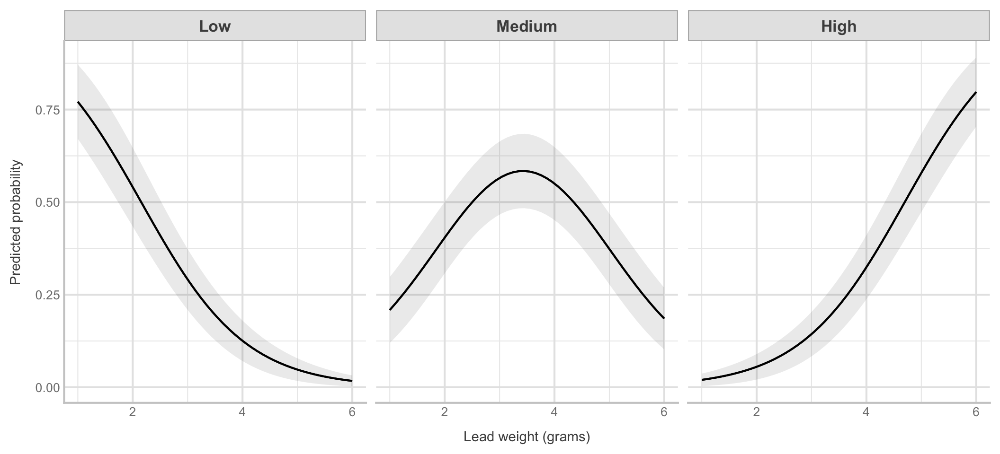
As weight increases: P(Low) decreases, P(High) increases. The S-curves are the same shape (proportional odds!) — just shifted.
The key assumption: the slope is equal across all cumulative splits
In our dice model: the effect of lead weight on the log-odds of \(Y \leq\) Low vs. \(Y >\) Low is the same as the effect on \(Y \leq\) Medium vs. \(Y >\) Medium
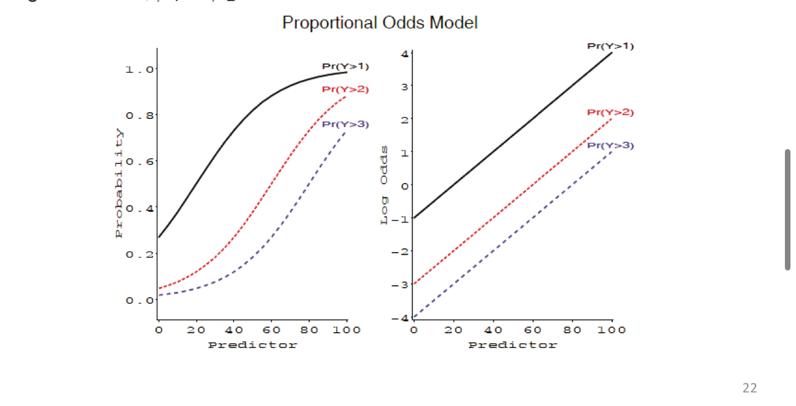
Note
If this assumption holds, you only need one slope per predictor — massive parsimony. If it doesn’t hold, consider partial proportional odds or multinomial models.
| Step | What we did | What it teaches |
|---|---|---|
| Generate latent scores | rnorm() per die |
Latent variable concept |
| Apply thresholds | case_when() with \(\tau_1\), \(\tau_2\) |
How categories arise from a continuum |
| Fit OLS | lm(y_numeric ~ lead_weight) |
Why treating ordinal as numeric fails |
| Fit ordinal model | clm(category ~ lead_weight) |
How cumulative logit works |
| Check estimates vs. truth | Compare \(\hat{\alpha}\) to \(\tau\), \(\hat{\beta}\) to true slope | Model recovers the generating process |
Note
Now let’s apply this to real data — where we don’t know the truth.
Undergraduate students report how likely they were to apply to graduate school (apply): “Unlikely”, “Somewhat Likely”, “Very Likely”
Additional information: GPA (gpa), parent education (pared) (college vs. no college), type of schooling (public) (public vs. private)
| apply | n | proportion |
|---|---|---|
| somewhat likely | 140 | 0.35 |
| unlikely | 220 | 0.55 |
| very likely | 40 | 0.10 |
Tip
Always use ordered() to explicitly set the level ordering. R won’t guess correctly — it defaults to alphabetical.
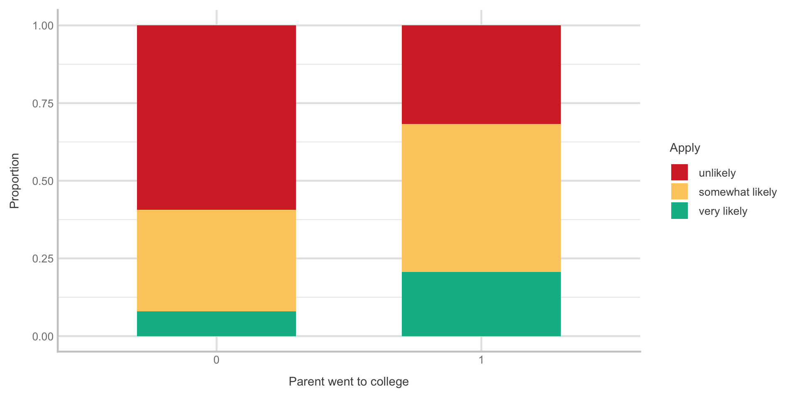
\[\text{logit}(P(Y_i \leq j)) = \alpha_j - \beta_1 \cdot \text{pared}_i\]
ordinal::clm (can also use MASS::polr)| term | estimate | std.error | statistic | p.value | conf.low | conf.high | coef.type |
|---|---|---|---|---|---|---|---|
| unlikely|somewhat likely | 0.377 | 0.110 | 3.415 | 0.001 | NA | NA | intercept |
| somewhat likely|very likely | 2.452 | 0.183 | 13.430 | 0.000 | NA | NA | intercept |
| pared1 | 1.127 | 0.263 | 4.280 | 0.000 | 0.613 | 1.648 | location |
Thresholds (2 thresholds for 3 categories)
unlikely|somewhat likely: log-odds of being Unlikely vs. higher, when pared = 0somewhat likely|very likely: log-odds of being ≤ Somewhat Likely vs. Very Likely, when pared = 0Slope
pared1: Students with a college-educated parent have higher log-odds of being in a higher application category| term | estimate | std.error | statistic | p.value | conf.low | conf.high | coef.type |
|---|---|---|---|---|---|---|---|
| pared1 | 3.088 | 0.263 | 4.28 | 0 | 1.846 | 5.196 | location |
Exponentiate the log cumulative odds to get odds ratios
Students with college-educated parents have roughly 3× the odds of applying to graduate school
\[P(Y \leq k) = \frac{\exp(\alpha_k - \beta X)}{1 + \exp(\alpha_k - \beta X)}\]
| rowid | group | estimate | std.error | statistic | p.value | s.value | conf.low | conf.high | pared | apply |
|---|---|---|---|---|---|---|---|---|---|---|
| 1 | unlikely | 0.593 | 0.027 | 22.273 | 0 | 362.664 | 0.541 | 0.645 | 0 | very likely |
| 2 | unlikely | 0.321 | 0.053 | 6.019 | 0 | 29.089 | 0.216 | 0.425 | 1 | very likely |
| 1 | somewhat likely | 0.328 | 0.024 | 13.688 | 0 | 139.259 | 0.281 | 0.374 | 0 | very likely |
| 2 | somewhat likely | 0.469 | 0.033 | 14.070 | 0 | 146.949 | 0.404 | 0.535 | 1 | very likely |
| 1 | very likely | 0.079 | 0.013 | 5.949 | 0 | 28.469 | 0.053 | 0.105 | 0 | very likely |
| 2 | very likely | 0.210 | 0.042 | 4.944 | 0 | 20.316 | 0.127 | 0.293 | 1 | very likely |
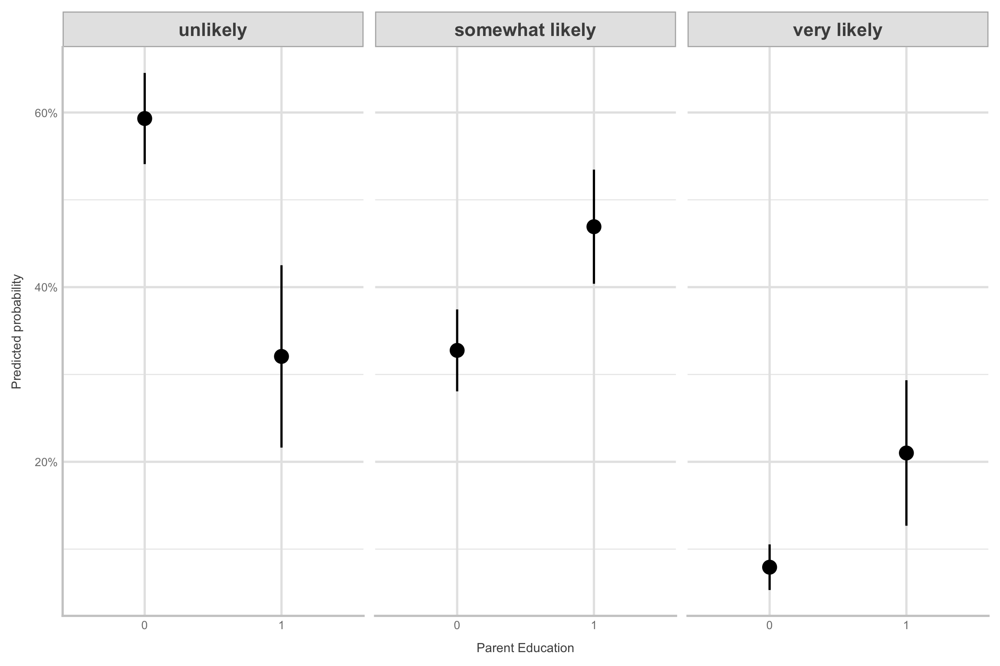
| term | group | contrast | estimate | std.error | statistic | p.value | s.value | conf.low | conf.high |
|---|---|---|---|---|---|---|---|---|---|
| pared | unlikely | 1 - 0 | -0.272 | 0.058 | -4.664 | 0.000 | 18.301 | -0.387 | -0.158 |
| pared | somewhat likely | 1 - 0 | 0.142 | 0.027 | 5.257 | 0.000 | 22.700 | 0.089 | 0.194 |
| pared | very likely | 1 - 0 | 0.131 | 0.040 | 3.243 | 0.001 | 9.726 | 0.052 | 0.210 |
Tip
Marginal effects tell you the change in probability for each category — much easier to interpret than odds ratios.
brant test: compares the full proportional odds model to one that relaxes the assumption
Several options:
Multinomial regression — use lowest level as reference; no ordering assumed
Adjacent category model — model transitions between neighboring categories
Non-proportional odds (NPO) model — allow slopes to vary by split
A predictor doesn’t push someone into a specific category — it shifts their latent score, which redistributes probability across all categories simultaneously.
predictions(ols2,
newdata = datagrid(gpa = c(2.5, 3.0, 3.5, 4.0),
pared = "0", public = "0")) %>%
mutate(gpa_label = paste0("GPA = ", gpa)) %>%
ggplot(aes(x = group, y = estimate, fill = group)) +
geom_col(width = 0.7) +
geom_errorbar(aes(ymin = conf.low, ymax = conf.high), width = 0.2) +
facet_wrap(~gpa_label, nrow = 1) +
scale_fill_manual(values = c("unlikely" = color_low,
"somewhat likely" = color_med,
"very likely" = color_high),
guide = "none") +
scale_y_continuous(labels = scales::percent) +
labs(x = "Response category", y = "Predicted probability",
title = "How probability mass redistributes as GPA increases",
subtitle = "Non-college-educated parent, private school") +
theme_lucid(base_size = 14) +
theme(axis.text.x = element_text(angle = 20, hjust = 1))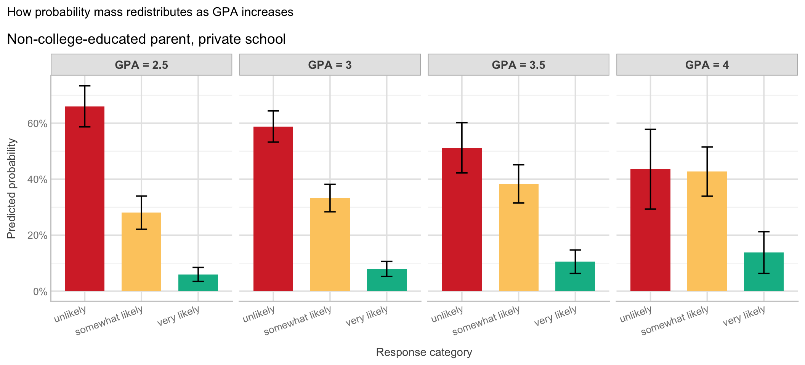
Tip
This is what the model predicts, not the raw data. As GPA rises, probability drains from “unlikely” and flows into “somewhat likely” and “very likely.” All three categories change simultaneously — that’s the ordinal redistribution.
| Parent Ed | Main Effects | Interaction | |
|---|---|---|---|
| + p < 0.1, * p < 0.05, ** p < 0.01, *** p < 0.001 | |||
| unlikely|somewhat likely | 1.458*** | 9.055** | 8.424* |
| (0.161) | (7.059) | (7.130) | |
| somewhat likely|very likely | 11.610*** | 73.609*** | 68.570*** |
| (2.120) | (59.205) | (59.450) | |
| pared1 | 3.088*** | 2.851*** | 1.799 |
| (0.813) | (0.758) | (3.834) | |
| public1 | 0.943 | 0.940 | |
| (0.281) | (0.280) | ||
| gpa | 1.851* | 1.807* | |
| (0.482) | (0.511) | ||
| pared1 × gpa | 1.160 | ||
| (0.791) | |||
| Num.Obs. | 400 | 400 | 400 |
| AIC | 728.8 | 727.0 | 729.0 |
| BIC | 740.8 | 747.0 | 752.9 |
| RMSE | 1.37 | 1.37 | 1.37 |
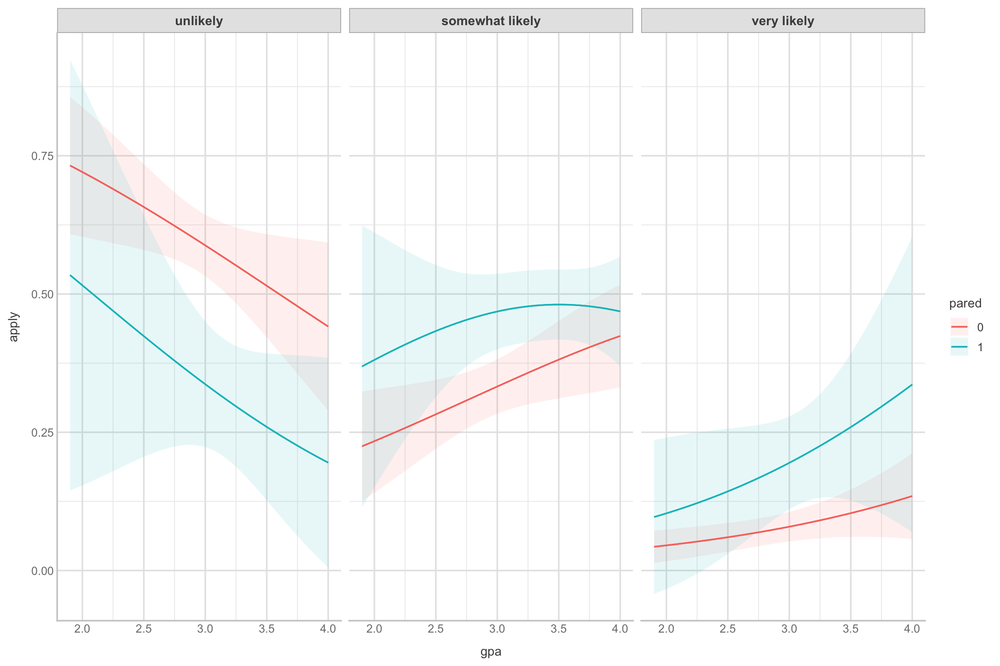
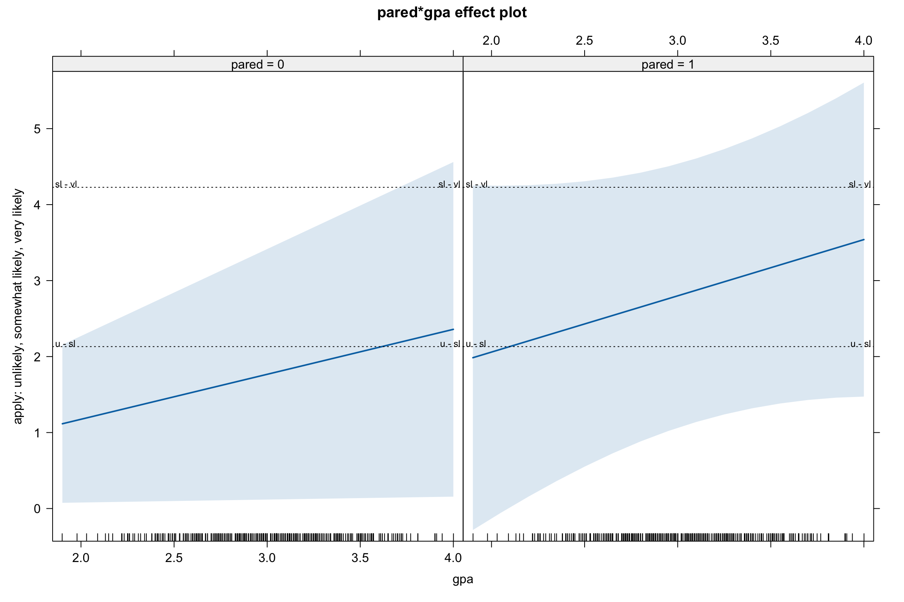
| term | group | contrast | estimate | std.error | statistic | p.value | s.value | conf.low | conf.high |
|---|---|---|---|---|---|---|---|---|---|
| gpa | unlikely | +1 | -0.143 | 0.059 | -2.430 | 0.015 | 6.049 | -0.258 | -0.028 |
| gpa | somewhat likely | +1 | 0.074 | 0.031 | 2.350 | 0.019 | 5.735 | 0.012 | 0.135 |
| gpa | very likely | +1 | 0.069 | 0.036 | 1.906 | 0.057 | 4.143 | -0.002 | 0.141 |
| pared | unlikely | 1 - 0 | -0.247 | 0.063 | -3.928 | 0.000 | 13.510 | -0.370 | -0.124 |
| pared | somewhat likely | 1 - 0 | 0.130 | 0.032 | 4.071 | 0.000 | 14.383 | 0.068 | 0.193 |
| pared | very likely | 1 - 0 | 0.117 | 0.039 | 3.034 | 0.002 | 8.697 | 0.041 | 0.193 |
| public | unlikely | 1 - 0 | 0.014 | 0.069 | 0.209 | 0.835 | 0.261 | -0.122 | 0.151 |
| public | somewhat likely | 1 - 0 | -0.009 | 0.044 | -0.207 | 0.836 | 0.259 | -0.096 | 0.077 |
| public | very likely | 1 - 0 | -0.005 | 0.025 | -0.212 | 0.832 | 0.265 | -0.055 | 0.044 |
No easystats functions for ordinal models :(
sure package: surrogate residuals — based on continuous residuals
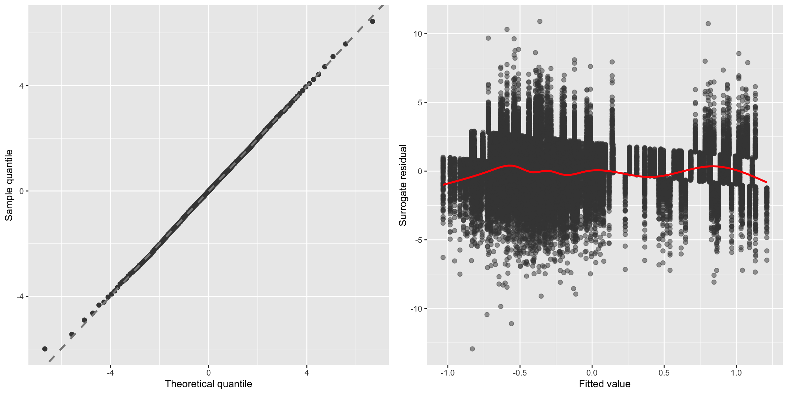
Note
For multicollinearity, check correlations between predictor variables directly.
Outcome is ordinal (ordered categories)
Observations are independent
Proportional odds (parallel slopes across cumulative splits)
Linearity in the log-odds (for continuous predictors)
No normality assumptions for residuals
Homogeneity of variance
Tip
A proportional odds model with a logit link (estimated using ML) was used to investigate factors influencing undergraduates’ likelihood of applying to graduate school (“unlikely,” “somewhat likely,” “very likely”). The overall model fit was modest, McFadden’s pseudo-\(R^2\) = .03. Parent education significantly predicted application likelihood, b = 1.05, z = 3.94, p < .001, OR = 2.85, 95% CI [1.55, 5.28]. Students with college-educated parents had roughly 185% higher odds of applying. Whether students attended public or private school did not significantly predict application likelihood, b = −0.06, z = −0.20, p = .844, OR = 0.94. GPA was also a significant predictor, b = 0.62, z = 2.36, p = .018, OR = 1.85. Each one-point increase in GPA was associated with 85% higher odds of applying.
Report the model type (proportional odds / cumulative logit) and estimation method
Report log-odds coefficients and odds ratios with 95% CIs
Report thresholds (or note they are available)
Report a measure of model fit (McFadden pseudo-\(R^2\))
Test and report the proportional odds assumption (Brant test or LRT)
Consider reporting marginal effects / predicted probabilities for each category
Include sample size and distribution across response categories
Mention diagnostics (surrogate residuals, multicollinearity)
Treating ordinal data as continuous — running OLS or t-tests on Likert scales
Forgetting that coefficients are in cumulative log-odds, not probabilities
Confusing thresholds with slopes — thresholds are intercepts for each cumulative split, not effects of predictors
Ignoring the proportional odds assumption
Interpreting odds ratios as probability ratios
Not visualizing predicted probabilities per category
plot_predictions()PSY 504: Advanced Statistics